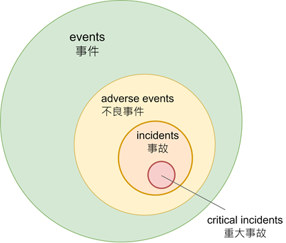

事件 vs. 事故
您若是實際從事系統及網路的操作管理、 IT 維運，或所謂的資安工作（強調「實際從事」，而非資安稽核或是資安顧問），可能經常困惑於事件（event）或是事故（incident）這二個名詞。在不同機構或文件，對這二個名詞的認知、解讀甚至是譯法，都不儘相同。最特別是， 資通安全管理法（下稱資安法）中所用的詞是「資通安全事件」，而在其英譯法規中則是譯作 cyber security incident（應為「事故」，法規中英文相互矛盾）, 而中華民國國家標準（CNS）則用「資訊安全事件（information security event）」及「資訊安全事故（information security incident）」1。「事件」究竟指的是 event 或是 incident? 資安法的條文中英文不僅分歧，同時也與國家標準，甚至國際標準相互矛盾。 這不僅凸顯了現行資安專業術語的紊亂，更 顯露了臺灣資安治理長期被忽略的 「定義模糊性(ambiguity)」問題。
凡能夠說的，都能夠說清楚；凡是不能談的，就應該保持沉默。
– 維根斯坦 《邏輯哲學論》
為什麼定義清楚很重要？
首先，不利資源分配及相應的處置效率。在實務操作上處理事件和事故所需要投入的資源有顯著差異。一般來說，事件只需要監控與分析，不必啟動應變（例如SOC所提供的告警訊息），但事故就可能必須啟動通報、修復、調查等應變作業。
其次，不利國際接軌，產生雞同鴨講現象。與國際組織交換情資或技術交流時，倘術語混淆，定義不清，可能導致誤判，或是統計資料失真（例如臺灣究竟遭受網路攻擊的次數？）。
再者，可能不利責任釐清及通報過載現象。例如，2025年5月立法院初審資安法修法「特定非公務機關若發生資安事件未依規通報，最高可處1000萬元罰鍰」，以現行資安法對資安事件此舉恐造成機關事無分大小，先通報了再說，但受理通報的機關有否因應量能（先別提協助支援?），後續是否需要釐清責任等都面臨考驗。
ISO(CNS) 和 NIST 的說法
由於 CNS 的大抵迻譯自 ISO ，以下是摘錄自 CNS對事件和事故的定義：2
資訊安全事件：系統、網路或服務狀態之被識別現象，指出可能係資訊安全政策的漏洞或保全之失效，或先前不知可能與安全相關的情況。
資訊安全事故：有顯著機率危害營運及威脅資訊安全之單一或一連串非所欲或非預期的資訊安全事件。
以上定義不太容易閱讀理解，在實務上更是難以操作（例如什麼是顯著機率？），但目前國內為了取得ISO認證之公私部門，大多複製以上定義。一般來說，事件不必然導致事故，但事故則一定是由事件所造成（ i.e., 事故是事件的充分條件，而事件則是事故的必要條件）。例如，防火牆或是防毒軟體阻擋某些可能的攻擊行為，但未影響資料或系統運作，則其不構成事故，應單純屬事件。事故則是對所保護的資料或系統（機密性、完整性或可用性）或業務產生負面影響，例如，DDoS攻擊或機房火災，導致系統故障或毀損；其次，員工保管的筆記型電腦不慎遺失，其中可能存有公司的機密資料，這類事件就構成事故（至於為什麼員工會將公司機密資料存於員工筆記型電腦？這是資安課題？抑或是公司的內部控制課題？）。
NIST 則將事件分成事件、不良事件（adverse events）及事故三類3。事件是指涉及資訊資產上任何可觀察到的現象，例如，有使用者嘗試登入、安裝軟體，以及應用程式回應交易請求。許多事件可能具有安全上的隱患。 不良事件是指無論原因為何，與負面後果相關的任何事件，包括自然災害、電力故障或網路安全攻擊。 事故是指「在未經合法授權的情況下，實際或即將危害資訊或資訊系統的完整性、機密性或可用性；或構成對法律、安全政策、安全程序或可接受使用政策的違反或即將發生（imminent）的威脅。」。NIST並舉若干實例說明何謂事故4，但實務上，若要「知悉」或辨識這些情況可能需要一段時間（工具不一定有用），可能衍生與後續通報或應變時機點的衝突。
有論者認為 NIST對事故的定義範圍太廣，並不切實際，因為這類事故在大多數組織中太常見了，特別像是「使用政策的違反或即將發生」這種隱含性的說法。如果不論規模、類型的事故都得「應變處置」，還要再加上「通報」、那組織得挹注多少資源才能應付這類行政程序呢？論者以為唯有需要具體回應（incident response）的事故才稱得上是事故，甚至認為這些事故中會影響到業務運行者，才需要加以認真看待。5當然，這種看法見仁見智，但實務上，您必須根據組織有多少資源，相應調整對事故的定義。
務實看待的分類與作法
各種標準、框架甚至是法規（不論有無學理基礎或是自稱「最佳實踐」），如果脫離了現場實際操作的複雜性，就容易給人「不食人間煙火」的感覺。基於個人現場工作的實際經驗，並綜合分析現時各種標準和不同行業間可能的差異，所嘗試的分類。我認為應將事件分為一般事件（簡稱事件）和不良事件，而事故則分為一般事故（簡稱事故）和重大事故。當然，根據行業或組織的不同，應該根據其實際的情況及需求，允許存有若干差異。但無論如何，事件和事故必須加以區隔，事故是一種特殊類型的事件，需要系統性的回應，但事件則不必然。以下是事件與事故分類的關係示意圖。

事件（events）：在系統或網路中所發生任何可被觀察到的活動或變化。
不良事件（adverse events）：具有負面效應的事件，或已確認具潛在危害的事件，但尚未（或無法確認）造成實際損害。
事故（incidents）：造成實際損害的不良事件；這些損害主要聚焦在機密性、完整性及可用性。
重大事故（critical incidents）：對業務營運造成影響的事故。
下表針對此分類補充說明，並舉若干可能的具體實例。
| 分類術語 | 定義及說明 | 實例 |
|---|---|---|
| 事件 | 系統的運作環境中，被觀察到的變化。無論是正常或異常的變化，未構成-或尚無法確認是否構成損害，事件基本上是中性的指標 | 更新路由器或交換器的ACL、更新防火牆規則、單次登入失敗、發現有掃描探測80port、防毒軟體隔離低風險檔案等 |
| 不良事件 | 已確認具潛在危害的事件，但尚未（或無法確認）造成實際損害。需人工積極介入分析，可能升級為事故 | 登入多次失敗、員工多次嘗試存取未授權資料（尚未成功）、發現未修補漏洞（尚未被利用）、員工點擊釣魚信件 |
| 事故 | 已實際發生系統或資料的機密性、完整性、可用性受到損害 | 勒索軟體加密檔案、資料庫遭未授權存取、資料外洩、服務中斷 |
| 重大事故 | 事故狀態持續並惡化，或其損害影響業務正常運行。需要考量其規模、影響的層面及嚴重性等因素，不同行業或組織宜有不同指標 | 銀行ATM服務或證券商下單系統中斷達??小時、資料外洩達??筆、遭勒索軟體綁架達??小時、醫院網路掛號系統當機達??小時 |
上述分類的操作性定義可由各行業或組織另行評斷或進一步細緻化，將更有利於現場實務操作。例如，事故與重大事故之主要區別在於其是否影響業務運行，但影響多久算是「重大」？則應該由影響層面或經濟損失衡量，各個行業自然有所不同；購物網站當機2小時對業者來說其經濟損失可能尚屬有限，但全國供電系統當機5分鐘，可能就是重大事故。其次，停電、地震或其他天災等造成系統服務中斷究竟屬事故或是不良事件也值得討論（資安法過往主政單位的某主管認為即使是短暫的停電，也是資安事件，也要通報……）。
所以，這些分類及其定義將牽動在什麼情況下要「通報」？ 現行資安法將所謂的「資安事件」依其輕重分為四級，估且不論此分級有否學理或實證依據，光就其用詞就有諸多疑義而滯礙難行。例如，條文中出現「輕微洩漏」、「嚴重洩漏」等用語，在實際判斷上就有爭議。多少筆資料才算「輕微」？資料的敏感程度如何界定「嚴重」與「輕微」？由誰界定？「知悉」後一小時內通報（舉世少有的時限，不知道這一小時是怎麼算出來的？），在實務上很難明確界定。因為「知悉」理應是一個逐步確認的過程，可能先是發現異常，經過初步調查分析，才逐步確認具體情況。何況，受理通報機關接獲通報後能有什麼具體的作為，令人存疑，這類通報數據最終可能只是拿來作為該等機關刷存在感的素材罷了，而通報也就成了某種形式的「資安表演」。
如果從現場實務操作的角度，一般來說，只有事故或重大事故才需要通報，事件根本無需通報，不良事件則應該是「選擇性通報」，其選擇性之衡量標準，可視資源與人力、事件變化之可能等情況而定。至於受通報機關應有何種作為等後續事宜，或其他國家對通報的相關規定等，則尚非本文討論範圍。
唯有「語言精確」才能「精準治理」
行政院某前政務委員出席資安主管聯盟成立大會致詞時，會議視訊突然斷線，恢復連線時該政委大人說：「availability（可用度）也算是資安，不是說不是惡意攻擊就不算，這個是基本概念。」6 真的嗎？根據這位前政委的說法，視訊中斷是現行資安法所謂的資安事件嗎？需要一小時內通報嗎？所謂的資安「基本概念」究竟有哪些？定義夠清楚嗎？
「事件」與「事故」的混淆不清，通報分級的語意模糊，充分反映現行資安治理重形式輕實質的研考套路（寫計畫、填報表，辦稽核）。事實上，唯有精確定義問題和術語，從釐清這些「基本概念」作起，資安工作才有機會從務虛的應付稽核，轉向務實的風險管理，這才是資安工作的核心價值。
注釋及參考資料
經濟部標準檢驗局，中華民國國家標準 CNS 27000:2016 X6101（其內容大抵迻譯ISO27000文件）↩︎
同注釋[1]↩︎
NIST SP 800-61r3, “Incident Response Recommendations and Considerations for Cybersecurity Risk Management,” April, 2025.↩︎
(1)利用殭屍網路（botnet）發送大量連線請求，致其無法提供正常服務。 (2)取得軟體即服務（SaaS）供應商的管理權限，致使用該服務之客戶敏感資料面臨風險。 (3)入侵企業營運網路竊取憑證，並藉以操控工業控制系統，關閉或破壞實體組件，造成重大服務中斷 (4)部署勒索軟體癱瘓電腦系統運作，引發資料外洩事件。 (5)透過釣魚郵件入侵使用者帳號，再利用該帳號進行詐騙。 (6)發現網路管理設備的新漏洞，並利用此漏洞存取網路通訊內容。 (7)入侵供應商軟體，篡改版本後分派至客戶端。↩︎
Daniel Miessler, The Difference Between Events, Alerts, and Incidents, https://danielmiessler.com/blog/event-alert-incident Accessed: 2025.07.10↩︎
自由時報,「糗了！台灣資安主管聯盟成立大會視訊斷線，唐鳳笑回這也算資安」
https://ec.ltn.com.tw/article/breakingnews/3908781 Accessed:2025.07.10↩︎